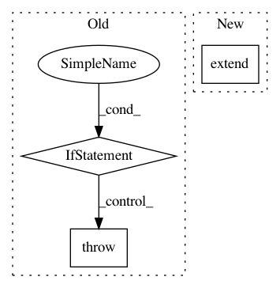

f171796995d17e3db4b4752a116e532d499dc91f,src/caffe/pyutil/convert.py,,array_to_datum,#,20
Before Change
def array_to_datum(arr):
if arr.ndim != 3:
raise ValueError("Incorrect array shape.")
if arr.dtype != np.uint8:
raise TypeError("Input array has to be of type uint8.")
datum = caffe_pb2.Datum()
datum.channels, datum.height, datum.width = arr.shape
datum.data = arr.tostring()
return datum
After Change
if arr.dtype == np.uint8:
datum.data = arr.tostring()
else:
datum.float_data.extend(arr.flat)
return datum
In pattern: SUPERPATTERN
Frequency: 3
Non-data size: 3
Instances
Project Name: BVLC/caffe
Commit Name: f171796995d17e3db4b4752a116e532d499dc91f
Time: 2013-09-30
Author: jiayq84@gmail.com
File Name: src/caffe/pyutil/convert.py
Class Name:
Method Name: array_to_datum
Project Name: scikit-learn/scikit-learn
Commit Name: 670b85c9e9cec05210e8596bc1fb9ca66787162f
Time: 2020-04-19
Author: 50599110+lrjball@users.noreply.github.com
File Name: sklearn/compose/_column_transformer.py
Class Name: ColumnTransformer
Method Name: get_feature_names
Project Name: BVLC/caffe
Commit Name: c65ba61bdf273604c3edcd24ba7a80cc3835441a
Time: 2015-10-08
Author: sh1r0@users.noreply.github.com
File Name: python/caffe/io.py
Class Name:
Method Name: array_to_blobproto